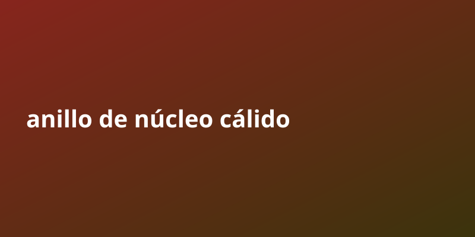

Anillo de núcleo cálido | Anillo de núcleo cálido

Entender anillo de núcleo cálido ya no es opcional: es una ventaja competitiva para quien quiere crecer.
Un anillo central cálido es un tipo de remolino de mesoescala que se forma y se desprende de una corriente oceánica, como la Corriente del Golfo o la Corriente de Kuroshio. El anillo es un sistema circulatorio independiente de agua tibia que puede persistir durante varios meses antes de perder su identidad distintiva. Los anillos de núcleo cálido también se forman en ciertas poderosas corrientes oceánicas, como el Kuroshio y la Corriente del Golfo. Los anillos de núcleo cálido se pueden detectar utilizando satélites infrarrojos o anomalías en la altura del mar que resultan de las aguas más frías circundantes y son fácilmente identificables contra ellas. Además, los anillos de núcleo cálido también se distinguen por sus bajos niveles de actividad biológica. Se cree que este tipo de sistema ayudó a desarrollar varios huracanes, más notablemente el huracán Katrina, en tormentas significativamente más fuertes debido a la abundancia de agua oceánica más cálida que alcanza una profundidad significativa, que a su vez alimenta e intensifica el huracán. Los anillos de núcleo cálido también son conocidos por afectar la vida silvestre, ya que tienen la capacidad de llevar la vida silvestre de aguas típicamente cálidas a áreas típicamente dominadas por aguas frías.
Puntos clave sobre anillo de núcleo cálido
- Diferenciarse no requiere inventar nada: basta con curadar, organizar y entregar valor de forma clara y constante.
- La clave esta en la consistencia. Los sistemas que funcionan se apoyan en procesos repetibles y medibles, no en suerte.
- La automatizacion permite escalar sin aumentar tu tiempo. Una vez configurado, el flujo trabaja por ti 24/7.
Por que importa
Diferenciarse no requiere inventar nada: basta con curadar, organizar y entregar valor de forma clara y constante. La clave esta en la consistencia. Los sistemas que funcionan se apoyan en procesos repetibles y medibles, no en suerte.
Guia paso a paso
- Investiga bien el tema de anillo de núcleo cálido usando fuentes publicas gratuitas.
- Organiza la informacion en puntos claros y accionables.
- Crea un sistema que publique de forma automatica y constante.
- Revisa metricas y elimina lo que no aporta valor.
- Escala lo que funciona y delega el resto a la automatizacion.
Errores comunes a evitar
- Quierer hacerlo todo manualmente en lugar de automatizar.
- Ignorar la consistencia y publicar solo cuando hay tiempo.
- Copiar sin curador: el valor esta en organizar y entregar claridad.
- No medir resultados y repetir lo que no funciona.
- Subestimar el poder de la frecuencia y el volumen compuesto.
Preguntas frecuentes
¿Cuanto tiempo tarda en verse resultado con anillo de núcleo cálido?
Depende de la constancia; con publicacion automatica, el efecto compuesto aparece semana a semana.
¿Necesito invertir dinero para empezar?
No. Con fuentes publicas y automatizacion puedes arrancar sin capital inicial.
¿Por que la frecuencia importa tanto?
Porque cada pieza suma alcance acumulado; el volumen constante vence a la perfeccion esporadica.
¿Como diferencio mi contenido?
Curado, claridad y formato: empaquetar lo publico en algo util y facil de consumir.
Checklist rapida
- Define una meta clara de anillo de núcleo cálido y un plazo realista.
- Automatiza la parte repetitiva para no depender de tu tiempo.
- Mide resultados cada ciclo y ajusta lo que no funcione.
- Reutiliza contenido publico bien curado en vez de crear desde cero.
- Mantén consistencia: el volumen compuesto es la clave del crecimiento.
Conclusion
No esperes la situacion perfecta. Un ecosistema funcionando vale mas que diez planes en papel.
Herramienta recomendada para empezar: https://example.com/?ref=AUTONICHE